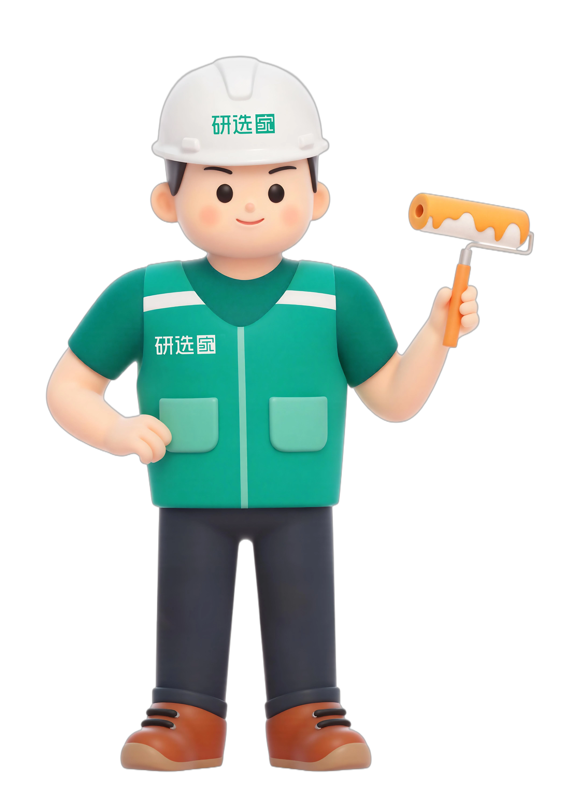

01 / EXPRESSION
PPT 技能图鉴
做好一份经营汇报，从选对交付路线开始。检索技能、比较能力与风格，再把材料变成清楚的表达。
每一次经营表达，每一个现场问题，
都能从这里找到一个更清楚的起点。

Y / X / J先判断这次要解决什么，
再进入对应的知识模块。
做好一份经营汇报，从选对交付路线开始。检索技能、比较能力与风格，再把材料变成清楚的表达。
从现场问题出发，按关键词、主题和阶段检索。保留原有经营动作、效果描述与来源，让经验有据可查。
规则、组织、门店、业绩与看板。
外部资料按原平台权限访问。
企业文档与会议录屏可能需要登录或授权。BI 入口已移除访问票据，如无法打开，请通过企业报表平台重新获取授权。
把工具选型变成一次明确判断。
先看交付要求，再看视觉偏好。
图表、企业模板、演讲者模式或导出能力。文档“未提及”，需要实际验证。
说明受众、页数和格式，先做 3 页，确认表达和风格后再扩展整套。
能打开、需要编辑的元素能改、数字口径一致。评分与样图作为选择线索。